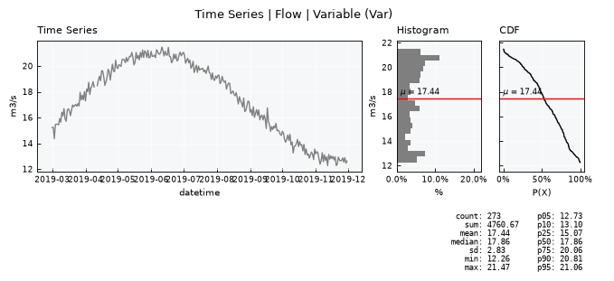
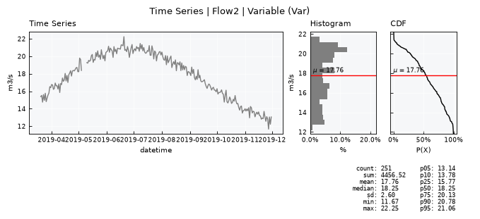
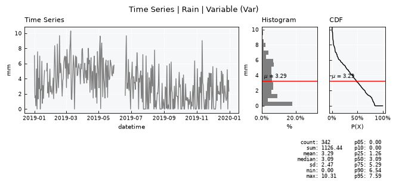
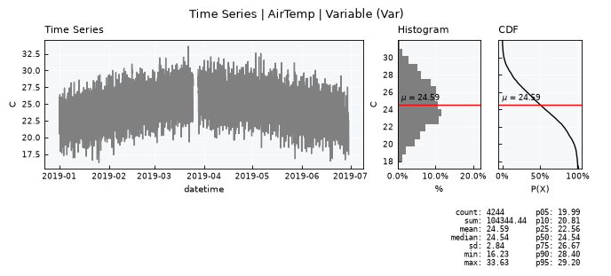
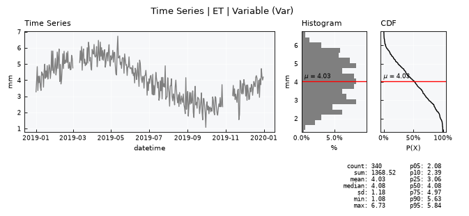
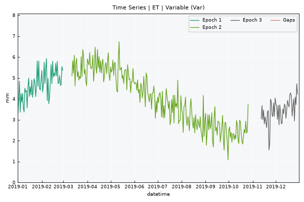
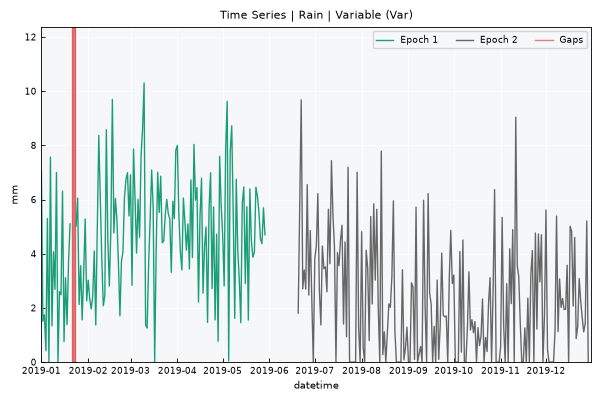
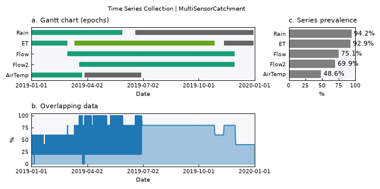

Time Series - Collections#
This tutorial builds a minimal TimeSeriesCollection for one (synthetic) catchment with five sensors that deliberately differ along every axis TimeSeriesCollection has to manage:
Series |
Frequency |
Range |
Gaps |
|---|---|---|---|
|
daily |
full year |
1 small (3d) + 1 large (20d) |
|
daily |
Mar–Nov (shorter) |
1 small (2d) |
|
daily |
Mar–Nov (shorter) |
1 small (2d) |
|
hourly |
Jan–Jun (shorter, different unit of time) |
1 small (5h) + 1 large (72h) |
|
daily |
full year |
2 separate medium gaps (10d, 15d) |
Covered here:
Building the four series with
TimeSeries.make_synthetic_tsn()Loading them into one
TimeSeriesCollectionstandardize()and what it does to each seriesCross-series overlap via
get_epochs()Per-series gap/epoch structure via
merge_local_epochs()
Notebook setup#
For users running this tutorial as a Jupyter Notebook, this cell must be executed first:
import sys
from pathlib import Path
import numpy as np
import pandas as pd
import matplotlib.pyplot as plt
# Install `plans` in `google.colab`.
# Use `pip install plans` for other environments.
if "google.colab" in sys.modules:
import os
os.system(f"{sys.executable} -m pip install -q plans")
from plans.datasets.core import TimeSeries, TimeSeriesCollection
# This avoids warnings related to uninstalled fonts
import logging
logging.getLogger('matplotlib.font_manager').setLevel(logging.ERROR)
OUTPUT_DIR = Path("outputs/time-series-collection")
OUTPUT_DIR.mkdir(parents=True, exist_ok=True)
print(f"Outputs will be saved to: ./{OUTPUT_DIR}")
RNG_SEED = 1
np.random.seed(RNG_SEED)
Outputs will be saved to: ./outputs/time-series-collection
Build synthetic series#
df_p = TimeSeries.make_synthetic_tsn(
start="2019-01-01", end="2019-12-31", base=3, trend=0.0,
amplitude=2, noise_sd=2.5, freq="D",
seasonal_period="YS", minor_seasonal_period="D", minor_amplitude=0,
variable="P",
)
df_p["P"] = df_p["P"].clip(lower=0)
df_p.loc[20:22, "P"] = np.nan # small gap (3d) -> interpolate_gaps should close this
df_p.loc[150:169, "P"] = np.nan # large gap (20d) -> a real Epoch 0 gap
df_q = TimeSeries.make_synthetic_tsn(
start="2019-03-01", end="2019-11-30", base=15, trend=0.01,
amplitude=5, noise_sd=0.3, freq="D",
seasonal_period="YS", minor_seasonal_period="D", minor_amplitude=0,
variable="Q",
)
df_q.loc[40:41, "Q"] = np.nan # small gap (2d)
df_q2 = TimeSeries.make_synthetic_tsn(
start="2019-03-20", end="2019-11-30", base=15, trend=0.01,
amplitude=5, noise_sd=0.4, freq="D",
seasonal_period="YS", minor_seasonal_period="D", minor_amplitude=0,
variable="Q",
)
df_q2.loc[46:50, "Q"] = np.nan # small gap (2d)
df_t = TimeSeries.make_synthetic_tsn(
start="2019-01-01", end="2019-06-30", base=22, trend=0.0,
amplitude=4, noise_sd=1.5, freq="h",
seasonal_period="YS", minor_seasonal_period="D", minor_amplitude=3,
variable="T",
)
df_t.loc[100:104, "T"] = np.nan # small gap (5h)
df_t.loc[2000:2071, "T"] = np.nan # large gap (72h)
df_et = TimeSeries.make_synthetic_tsn(
start="2019-01-01", end="2019-12-31", base=4, trend=0.0,
amplitude=1.5, noise_sd=0.5, freq="D",
seasonal_period="YS", minor_seasonal_period="D", minor_amplitude=0,
variable="ET",
)
df_et["ET"] = df_et["ET"].clip(lower=0)
df_et.loc[60:69, "ET"] = np.nan # medium gap (10d)
df_et.loc[300:314, "ET"] = np.nan # medium gap (15d), separate from the first
for df, fname in [(df_p, "rain.csv"), (df_q, "flow.csv"), (df_q2, "flow2.csv"), (df_t, "temp.csv"), (df_et, "et.csv")]:
df.to_csv(OUTPUT_DIR / fname, index=False, sep=";")
print("5 series written to", OUTPUT_DIR)
5 series written to outputs/time-series-collection
Load into a Time Series Collection#
TimeSeriesCollection reads one info table describing every series (name, alias, file, variable/datetime columns, units, coordinates):
info = pd.DataFrame({
"Name": ["Rain", "Flow", "Flow2", "AirTemp", "ET"],
"Alias": ["P1", "Q1", "Q2", "T1", "ET1"],
"File": [str(OUTPUT_DIR / f) for f in ["rain.csv", "flow.csv", "flow2.csv", "temp.csv", "et.csv"]],
"VarField": ["P", "Q", "Q", "T", "ET"],
"DtField": ["datetime"] * 5,
"Units": ["mm", "m3/s", "m3/s", "C", "mm"],
"X": [0, 0, 0, 0, 0],
"Y": [0, 0, 0, 0, 0],
"Code": ["P001", "Q001", "Q002", "T001", "ET001"],
"Source": ["synthetic"] * 5,
"Description": [
"daily rainfall",
"daily streamflow", "daily streamflow",
"hourly air temperature",
"daily evapotranspiration"
],
"Color": ["tab:blue", "tab:purple", "tab:purple", "tab:red", "tab:orange"],
})
info_file = OUTPUT_DIR / "info.csv"
info.to_csv(info_file, index=False, sep=";")
tsc = TimeSeriesCollection(name="MultiSensorCatchment")
tsc.load_data(table_file=str(info_file))
tsc.catalog
| name | alias | size | color | source | description | units | code | x | y | ... | datetime_res | start | end | is_standard | gap_size | n_epoch | n_gaps_small | file_data_datetime_field | file_data_variable_field | file_data | |
|---|---|---|---|---|---|---|---|---|---|---|---|---|---|---|---|---|---|---|---|---|---|
| 0 | AirTemp | T1 | 4321 | tab:red | synthetic | hourly air temperature | C | T001 | 0 | 0 | ... | hour | 2019-01-01 | 2019-06-30 | False | 6 | None | None | datetime | T | /home/runner/work/plans/plans/docs/tutorials/o... |
| 1 | ET | ET1 | 365 | tab:orange | synthetic | daily evapotranspiration | mm | ET001 | 0 | 0 | ... | day | 2019-01-01 | 2019-12-31 | False | 6 | None | None | datetime | ET | /home/runner/work/plans/plans/docs/tutorials/o... |
| 2 | Flow | Q1 | 275 | tab:purple | synthetic | daily streamflow | m3/s | Q001 | 0 | 0 | ... | day | 2019-03-01 | 2019-11-30 | False | 6 | None | None | datetime | Q | /home/runner/work/plans/plans/docs/tutorials/o... |
| 3 | Flow2 | Q2 | 256 | tab:purple | synthetic | daily streamflow | m3/s | Q002 | 0 | 0 | ... | day | 2019-03-20 | 2019-11-30 | False | 6 | None | None | datetime | Q | /home/runner/work/plans/plans/docs/tutorials/o... |
| 4 | Rain | P1 | 365 | tab:blue | synthetic | daily rainfall | mm | P001 | 0 | 0 | ... | day | 2019-01-01 | 2019-12-31 | False | 6 | None | None | datetime | P | /home/runner/work/plans/plans/docs/tutorials/o... |
5 rows × 29 columns
Raw series at a glance#
Visualize individual TimeSeries accessing by the name
tsc.collection["Flow"].view()
tsc.collection["Flow2"].view()


tsc.collection["Rain"].view()
tsc.collection["AirTemp"].view()
tsc.collection["ET"].view()



Learn about the epochs#
Visualize epochs per Time Series
tsc.collection["ET"].view_epochs()

tsc.collection["Rain"].view_epochs()

Learn collection-wise epochs
df_local_epochs = tsc.merge_local_epochs()
df_local_epochs
| name | id_epoch | n_epoch | n_gaps_small | start | end | color | |
|---|---|---|---|---|---|---|---|
| 0 | Rain | 1 | 150 | 3 | 2019-01-01 00:00:00 | 2019-05-30 00:00:00 | #1b9e77 |
| 1 | Rain | 2 | 194 | 0 | 2019-06-20 00:00:00 | 2019-12-30 00:00:00 | #666666 |
| 2 | Flow | 1 | 274 | 2 | 2019-03-01 00:00:00 | 2019-11-29 00:00:00 | #1b9e77 |
| 3 | Flow2 | 1 | 255 | 5 | 2019-03-20 00:00:00 | 2019-11-29 00:00:00 | #1b9e77 |
| 4 | AirTemp | 1 | 2000 | 5 | 2019-01-01 00:00:00 | 2019-03-25 07:00:00 | #1b9e77 |
| 5 | AirTemp | 2 | 2248 | 0 | 2019-03-28 08:00:00 | 2019-06-29 23:00:00 | #666666 |
| 6 | ET | 1 | 60 | 0 | 2019-01-01 00:00:00 | 2019-03-01 00:00:00 | #1b9e77 |
| 7 | ET | 2 | 230 | 0 | 2019-03-12 00:00:00 | 2019-10-27 00:00:00 | #66a61e |
| 8 | ET | 3 | 49 | 0 | 2019-11-12 00:00:00 | 2019-12-30 00:00:00 | #666666 |
Visualize collection-wise epochs
tsc.view()

Get merged data epochs
tsc.get_epochs()
| datetime | v_T1 | v_ET1 | v_Q1 | v_Q2 | v_P1 | Overlapping | id_epoch | |
|---|---|---|---|---|---|---|---|---|
| 0 | 2019-01-01 00:00:00 | 20.558105 | 3.278440 | NaN | NaN | 7.060863 | 0.6 | 1 |
| 1 | 2019-01-01 01:00:00 | 20.591839 | NaN | NaN | NaN | NaN | 0.2 | 1 |
| 2 | 2019-01-01 02:00:00 | 24.247251 | NaN | NaN | NaN | NaN | 0.2 | 1 |
| 3 | 2019-01-01 03:00:00 | 21.888637 | NaN | NaN | NaN | NaN | 0.2 | 1 |
| 4 | 2019-01-01 04:00:00 | 23.939504 | NaN | NaN | NaN | NaN | 0.2 | 1 |
| ... | ... | ... | ... | ... | ... | ... | ... | ... |
| 4500 | 2019-12-27 00:00:00 | NaN | 3.721585 | NaN | NaN | 1.434334 | 0.4 | 5 |
| 4501 | 2019-12-28 00:00:00 | NaN | 4.716271 | NaN | NaN | 5.210317 | 0.4 | 5 |
| 4502 | 2019-12-29 00:00:00 | NaN | 4.225181 | NaN | NaN | 0.000000 | 0.4 | 5 |
| 4503 | 2019-12-30 00:00:00 | NaN | 4.009106 | NaN | NaN | 3.812393 | 0.4 | 5 |
| 4504 | 2019-12-31 00:00:00 | NaN | 4.192162 | NaN | NaN | 2.374481 | 0.4 | 0 |
4505 rows × 8 columns
Standardize collection#
Regularizes each series onto its own regular time step and closes small gaps (interpolate_gaps), then merges all series onto one shared table:
tsc.standardize()
for name in tsc.collection:
d = tsc.collection[name]
print(f"{name:>10}: n={len(d.data):5d} nan={d.data['v'].isna().sum():5d} "
f"freq={d.dtfreq:>3} start={d.start.date()} end={d.end.date()}")
Rain: n= 367 nan= 21 freq= D start=2019-01-01 end=2020-01-02
Flow: n= 277 nan= 1 freq= D start=2019-03-01 end=2019-12-02
Flow2: n= 258 nan= 1 freq= D start=2019-03-20 end=2019-12-02
AirTemp: n= 4369 nan= 73 freq= h start=2019-01-01 end=2019-07-02
ET: n= 367 nan= 26 freq= D start=2019-01-01 end=2020-01-02
Merge data#
The .merge_data() is a helper method that makes an outer join for the available time series, returning a dataframe with all the data.
df_merged = tsc.merge_data()
df_merged
| datetime | v_T1 | v_ET1 | v_Q1 | v_Q2 | v_P1 | |
|---|---|---|---|---|---|---|
| 0 | 2019-01-01 00:00:00 | 20.558105 | 3.278440 | NaN | NaN | 7.060863 |
| 1 | 2019-01-01 01:00:00 | 20.591839 | NaN | NaN | NaN | NaN |
| 2 | 2019-01-01 02:00:00 | 24.247251 | NaN | NaN | NaN | NaN |
| 3 | 2019-01-01 03:00:00 | 21.888637 | NaN | NaN | NaN | NaN |
| 4 | 2019-01-01 04:00:00 | 23.939504 | NaN | NaN | NaN | NaN |
| ... | ... | ... | ... | ... | ... | ... |
| 4548 | 2019-12-29 00:00:00 | NaN | 4.225181 | NaN | NaN | 0.000000 |
| 4549 | 2019-12-30 00:00:00 | NaN | 4.009106 | NaN | NaN | 3.812393 |
| 4550 | 2019-12-31 00:00:00 | NaN | 4.192162 | NaN | NaN | 2.374481 |
| 4551 | 2020-01-01 00:00:00 | NaN | 4.375219 | NaN | NaN | 0.936569 |
| 4552 | 2020-01-02 00:00:00 | NaN | NaN | NaN | NaN | NaN |
4553 rows × 6 columns
Recap#
Built 5 synthetic series with independently varied range, gap structure, and time step.
TimeSeriesCollection.load_data()reads them all from one info table into a shared catalog.get_epochs()/merge_local_epochs()give the cross-series and per-series gap/epoch pictures respectively.